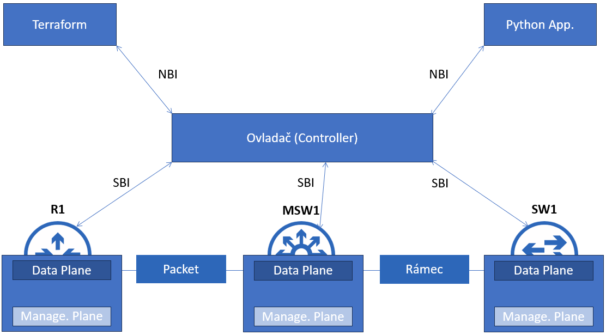

A
B
C
D
Představte si, že jste byli vybráni na pozici síťaře, jehož úkolem bude vytvořit novou síť. V této nové síti bude velký počet routerů, switchů a dalších síťových zařízení, které bude potřeba správně nakonfigurovat. Ruční konfigurací všech těchto zařízení byste strávili několik dní, přičemž by hrozilo, že byste v procesu mohli udělat pár chyb a do budoucna byste museli každé zařízení spravovat samostatně.
Nicméně v dnešní době se lze tomuto vyvarovat tím, že síť zautomatizujeme, což nám právě dokáže:
Předtím než hupsneme do samotného vysvětlování automatizace sítí, se musíme seznámit se třemi různými vrstvami zařízení (tzv. "planes"), které nám dají širší představu o tom, co se v síti vlastně automatizuje.
Pojmem "data plane" označujeme tu funkci zařízení, která dělá vše k tomu, aby doručila data.
To zahrnuje vše od přijimutí dat, přes zpracování až po odeslání.
Příklad data plane funkce u switche: Switch dostane unicastový rámec, koukne se do své mac adresové tabulky a podle ní pošle rámec dál...
Další příklady data plane:
Ještě poznamenám, že kromě "data plane" názvu se můžete setkat ještě s označením "forwarding plane".
Za "control plane" označujeme tu funkci zařízení, která zařizuje to, co data plane potřebuje k tomu, aby bylo schopné odesílat data.
A vlastně dokáže řídit to, podle čeho se data plane rozhoduje.
Většina procesů control plane na základě různých algoritmů a logického rozhodování tvoří "tabulky" (např. směrovací tabulku).
Využívá směrovací protokoly, ARP, STP a jiné protokoly.
Krásný příklad control plane si můžeme ukázat na Spanning Tree Protokolu, STP jako takové nemá vliv na doručování dat, avšak upozorňuje data plane na to, kterými porty lze data přenášet, aby nevznikla broadcastová bouře.
Control Plane je v podstatě takový mozek síťových zařízení.
Management plane nám umožňuje spravovat zařízení.
Mezi protokoly, které pod management plane patří řadíme: SNMP, SSH, Telnet, Syslog.
Jednu z možností, jak lze zautomatizovat síť nám definuje SDN (Software Defined Networking).
SDN nám představuje koncept centralizovaného řízení sítě, kdy ze síťových zařízení vyjmeme "control plane" a její činnost (případně část činnosti - což závisí na centrálnímu ovladači) přenecháme centralizovanému ovladači (tzv. Controller).
Například - Centralizovaný ovladač vykoná dané algoritmy (např. OSPF, STP, ARP), které by jinak udělalo dané síťové zařízení, jejich výsledky zpracuje a řekne "data plane" jednotlivých zařízení, co mají dělat k tomu, aby byla schopna doručovat data.
Centralizovaný ovladač komunikuje se síťovými zařízeními prostřednictvím tzv. "Southbound Interface - SBI". Pojem "SBI" označuje softwarový interface, nikoliv fyzický!
SBI se skládá z protokolu a API (Application Programming Interface), API je metoda pomocí které spolu aplikace můžou komunikovat.
Mezi SBI patří -
Centralizovaný ovladač dále komunikuje s aplikacemi třetích stran pomocí tzv. Northbound Interface - NBI. Pomocí aplikacích třetích stran můžeme získávat data ze sítě, případně síť můžeme pomocí nich konfigurovat.
Ke komunikaci používá NBI REST APIs.
REST API, nebo-li Representational State Transfer API nám definuje pravidla, podle nichž probíhá komunikace mezi aplikacemi.
REST APIs povětšinou používají HTTP(s) protokol pomocí něhož můžou žádat a číst data.
Základní HTTP(s) metody nám pomáhá si zapamatovat zkratka CRUD (Create, Read, Update, Delete).
| CRUD | HTTP metoda | Příklad |
|---|---|---|
| Create | POST | Vytvoří proměnnou |
| Read | GET | Získá proměnnou |
| Update | PUT, PATCH | Změní hodnotu proměnné |
| Remove | REMOVE | Odstraní proměnnou |
K práci s REST APIs byste měli být schopni porozumět HTTP kódům, ty dělíme do 5 kategorií -
| Číslo Kategorie | Název Kategorie | Příklad |
|---|---|---|
| 1xx | Informační | 102 - Processing |
| 2xx | Úspěch | 200 - OK |
| 3xx | Přesunutí | 301 - Moved Pernamently |
| 4xx | Client-Error | 404 - Not found |
| 5xx | Server-Error | 500 - Internal Server Error |
Pomocí aplikace třetí strany si například přes NBI můžeme nechat vypsat status všech interfaců. K tomu aby nám centralizovaný ovladač mohl tato data poskytnout se musí vytvořit HTTP(s) žádost (request).
HTTP(s) žádost se skládá z HTTP metody, URI (Uniform Resource Identifier).
Příklad HTTPS žádosti můžete vidět níže -
GET https://10.17.16.15/api/mit/topology/pod-1/node-1/sys/cphys.json
Na tuto HTTPS žádost nám centralizovaný ovladač odpoví prostřednictvím HTTPS odpovědi, ta je povětšinou v JSON či XML formátu.
V rámci síťové automatizace se pravděpodobně setkáte s jedním z těchto datových formátů:
JSON nebo-li Javascript Object Notation je datový formát se kterým se setkáte asi nejvíce. Pracuje s ním řada programovacích jazyků a REST APIs a vyznačuje se svou čitelností.
CCNA po vás vyžaduje jej znát a umět s ním pracovat.
Není citlivý na mezery.
Syntax JSONu je ve tvaru - key:value, kdy key je vždy v uvozovkách.
JSON uznává tyto datové typy - string, číslo, boolean, pole, null a objekt.
Ukázka JSONu:
"IPInterface":{
"interface_name":"FastEthernet0/1",
"ip_address": "192.168.0.54",
"netmask": "255.255.252.0",
"speed":1000,
"isEnabled":true
}
XML - Extensible Markup Language je další datový formát, který rovněž používají REST APIs, oproti JSON formátu je méně čitelný.
XML není citlivý na mezery.
Píše se ve formátu <key>value</key>.
Ukázka XML:
<?xml version="1.0" encoding="UTF-8"?>
<ShowIpInterfaceBrief xmlns="ODM://built-in//show_ip_interface_brief">
<SpecVersion>built-in</SpecVersion>
<IPInterfaces>
<entry>
<Interface>FastEthernet0/0</Interface>
<OK>YES</OK>
<Method>unset</Method>
<Status>administratively down</Status>
<Protocol>down</Protocol>
</entry>
</IPInterfaces>
</ShowIpInterfaceBrief>
YAML - YAML Ain't Markup Language je datový formát, jež je používán konfiguračním nástrojem Ansible, o kterém si budeme povídat později.
Stejně jako JSON je lidsky čitelný.
YAML poznáme tak, že vždy začíná třemi pomlčkami.
Je citlivý na mezery.
Ukázka YAML:
--- IPInterface: - interface_name: "FastEthernet0/1" ip_address: 192.168.0.54 mask: 255.255.252.0 speed: 1000 isEnabled: true
Jak už to tak v sítích bývá, pro každý typ sítě potřebujeme použít trochu jinou architekturu pro to, abychom zajistili její optimální fungování.
Se vznikem SDN Cisco vytvořilo tři základní SDN architektury -
Každé z těchto řešení funguje trochu jinak a pro potřeby CCNA není potřeba je znát do hloubky, avšak je nutné v souvislosti s těmito architekturami znát tyto pojmy:
SD-Access je SDN přístup Cisca určený pro "kampusové" sítě.
Je založené na principech, které jsme si představili předtím - má ovladač, který v závislosti na možnostech ovládá control plane síťových zařízení, a také má underlay a overlay.
Jako ovladač je zde použito tzv. Cisco DNA Centrum (DNA = Digital Network Architecture). DNA Centrum je aplikace nainstalovaná na Cisco UCS serveru.
DNA Centrum může být implementováno i do již fungujicí sítě, nevýhodou této pozdní implementace je, že nedokáže přenastavit underlay síťových zařízení a tím pádem je tohle na nás. DNA Center v této situaci slouží zejména k tomu, aby nám síť dokumentoval a sledoval její stav.
DNA Centrum se dá ovládat pomocí GUI nebo pomocí různých skript.
Velkou výhodou DNA Centra je to, že při tvorbě nové sítě (s hardwarem, který to podporuje) za nás vytvoří a nakonfiguruje celou "fabriku", což nám oproti tradičnímu způsobu dokáže ulehčit spoustu práce.
Další výhodou DNA Centra může být i to, že podporuje "intent-based networking".
Práci s SD-Access si můžete vyzkoušet zde.
Konfigurační nástroje jsou takovým mezikrokem mezi tradiční správou sítě a mezi plnohodnotnou SDN.
Tyto nástroje nám pomáhají s automatizací sítě tím, že za nás dokážou konfigurovat a spravovat síť.
Mezi tyto nástroje patří - Ansible, Puppet a Chef.
Ansible je open-source konfigurační nástroj napsaný v Pythonu.
Je tzv. "agentless", to znamená, že si jej pouze stačí nainstalovat na vaše zařízení bez nutnosti jej ještě instalovat na samotná síťová zařízení.
Na zařízení, kde máte Ansible nainstalovaný nastavíte vše potřebné a poté vybraným síťovým zařízením pošlete danou konfiguraci ("pull model"), to se děje prostřednictvím SSH či případně NETCONFu.
Ansible pracuje s několika soubory, mezi ty základní patří Playbook a Inventory.
Pomocí playbook definujeme to, co chceme na vybraných síťových zařízení provést, playbook je psán v YAML.
Inventory nám definuje jednotlivá síťová zařízení.
Ansible funguje na "rozkazovacím" principu, kdy my přes playbook definujeme přesně to, co se má provést, než abychom pouze definovali konečný stav, jak to bývá u deklaritivního způsobu.
Puppet je konfigurační nástroj napsaný v Ruby.
Oproti Ansible je tzv "agent-based" - to znamená, že je nutné jej mít nainstalovaný, kromě linuxového serveru, i na samotném síťovém zařízení, které chceme konfigurovat/spravovat. To může být na některých starších zařízení problém, lze to však obejít tím, že mezi síťové zařízení a puppet mastera dáme proxy server, který bude komunikovat s puppet masterem a předávat informace pomocí SSH síťovému zařízení.
Puppet funguje na tom principu, že si síťové zařízení aplikuje konfiguraci z puppet mastera (tento způsob se nazývá "pull model").
Na puppet masterovi je důležité správně nastavit tzv. "manifest", ten obsahuje kód, který popisuje konfiguraci, kterou chceme aplikovat na našich síťových zařízení.
Dále se Puppet od Ansible liší tím, že je deklarativní (Funguje na tom principu, že mu povíme, co chceme a on to za nás zařídí).
Více info o Puppet najdete zde.
Chef je stejně jako Puppet napsaný v Ruby.
Funguje na stejném principu jako Puppet ("agent-based", "pull model" a je také deklarativní).
Jediný velký rozdíl (kromě pojmů) oproti Puppet je ten, že nefunguje s proxy servery, tudíž je nutné mít takové síťové zařízení, které podporuje Chef.
Více informací o Chef najdete zde.
Automatizace počítačových sítí nám dokáže ušetřit čas, zjednodušit správu zařízení a snížit počet lidských chyb.
Celé toto téma stojí na rozdělení funkčnosti zařízení na 3 samostatné funkce - Data Plane, Control Plane, Management Plane.
Data Plane se stará o přijímání, zpracování a odesílání dat, Control plane se stará o algoritmy jejichž výsledky ovlivňují data plane, Management plane nám pak usnadňuje a umožňuje správu zařízení.
Jeden ze způsobů jak síť zautomatizovat nám definuje SDN (Software Defined Network). Tento způsob pracuje s tou myšlenkou, že control plane funkce bude ze zařízení vyjmuta a místo toho bude řízená centrálním ovladačem.
Použití jednoho centrálně řízeného ovladače má za následek to, že už nemusíme několik zařízení spravovat po jednom, ale můžeme je všechny pohodlně spravovat z ovladače.
Ovladač komunikuje se zařízeními prostřednictvím tzv. SBI (Southbound interface). Dále také může komunikovat s programy třetích stran a skripty prostřednictvím NBI (Northbound interface).
NBI je založeno na REST APIs.
REST APIs, nebo-li Representational State Transfer API nám definují způsob, jakým aplikace mezi sebou komunikují. REST APIs většinou používají ke komunikaci HTTP(s) protokol a JSON formát.
Cisco vytvořilo tři základní SDN architektury - SD-WAN, SD-Access a ACI.
Jestliže chceme plně přejít na SDN, musíme k tomu mít odpovídající hardware, což ne tak vždy je, proto je zde ještě možnost síť zautomatizovat pomocí konfiguračních nástrojů jako třeba Ansible, Puppet či Chef.
A
B
C
D